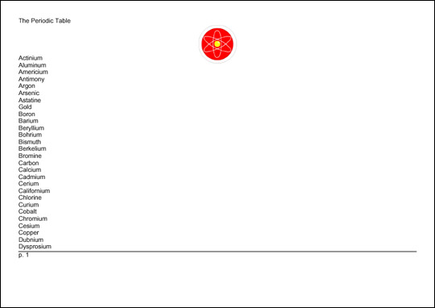

In This Chapter
Formatting objects and their properties
Page layout
Content
Leaders and rules
Graphics
Links
Lists
Tables
Inlines
Footnotes
Floats
Formatting properties
XSL Formatting Objects (XSL-FO) are the second half of the Extensible Stylesheet Language (XSL). XSL-FO is an XML application that describes how pages will look when presented to a reader. A style sheet uses the XSL transformation language to transform an XML document in a semantic vocabulary into a new XML document that uses the XSL-FO presentational vocabulary. While one can hope that web browsers will one day know how to directly display data marked up with XSL formatting objects, for now, an additional step is necessary in which the output document is further transformed into some other format, such as Adobe’s PDF.
XSL-FO provides a more sophisticated visual layout model than HTML+CSS. Formatting supported by XSL-FO, but not supported by HTML+CSS, includes right-to-left and top-to-bottom text, footnotes, margin notes, page numbers in cross-references, and more. In particular, while Cascading Style Sheets (CSS) is primarily intended for use on the Web, XSL-FO is designed for broader use. You should, for example, be able to write an XSL style sheet that uses formatting objects to lay out an entire printed book. A different style sheet should be able to transform the same XML document into a web site.
Caution
This chapter is based on the October 15, 2001, Recommendation of the XSL specification. However, most software does not implement all of the final Recommendation for XSL. In fact, so far, only a few standalone programs convert XSL-FO documents into PDF files. There are no web browsers that can display a document written with XSL formatting objects.
There are exactly 56 XSL formatting object elements. These are placed in the http://www.w3.org/1999/XSL/Format namespace. At least 99 percent of the time, the chosen prefix is fo. In this chapter, I use the fo prefix to indicate this namespace without further comment.
Of the 56 elements, most signify various kinds of rectangular areas. Most of the rest are containers for rectangular areas and spaces. In alphabetical order, these formatting objects are:
fo:basic-linkThe XSL formatting model is based on rectangular boxes called areas that can contain text, empty space, images, or other formatting objects. As with CSS boxes, an area has borders and padding on each of its sides, although CSS’s margins are replaced by XSL’s space-before and space-after. An XSL formatter reads the formatting objects to determine which areas to place where on the page. Many formatting objects produce single areas (at least most of the time); but because of page breaks, word wrapping, hyphenation, and other details that must be taken into account when fitting an indefinite amount of text into a finite amount of space, some formatting objects do occasionally generate more than one area.
The formatting objects differ primarily in what they represent. For example, the fo:list-item-label formatting object is a box that contains a bullet, a number, or another indicator placed in front of a list item. A fo:list-item-body formatting object is a box that contains the text, sans label, of the list item. And a fo:list-item formatting object is a box that contains both the fo:list-item-label and fo:list-item-body formatting objects.
When processed, the formatting objects document is broken up into pages. A web browser window will normally be treated as one very long page. A print format will often contain many individual pages. Each page contains a number of areas. There are four primary kinds of areas:
These form a rough hierarchy. Regions contain block areas. Block areas contain other block areas, line areas, and content. Line areas contain inline areas. Inline areas contain other inline areas and content. More specifically:
fo:region-body, fo:region-before, fo:region-after, fo:region-start, and fo:region-end.fo:block, fo:table-and-caption, and fo:list-block.fo:character, fo:external-graphic, fo:inline, fo:instream-foreign-object, fo:leader, and fo:page-number.When taken as a whole, the various formatting objects in an XSL-FO document specify the order in which content is to be placed on pages. However, formatting properties specify the details of formatting, such as size, position, font, color, and a lot more. Formatting properties are represented as attributes on the individual formatting object elements.
The details of many of these properties should be familiar from CSS. Work is ongoing to ensure that CSS and XSL-FO use the same names to mean the same things. For example, the CSS font-family property means the same thing as the XSL font-family property; and although the syntax for assigning values to properties is different in CSS and XSL-FO, the meaning of the values themselves is the same. To indicate that the fo:block element is formatted in some approximation of Times, you might use this CSS rule:
fo:block {font-family: 'New York', 'Times New Roman', serif}
The XSL-FO equivalent is to include a font-family attribute in the fo:block start-tag in this way:
<fo:block font-family="'New York', 'Times New Roman', serif">
Although this is superficially different, the style name (font-family) and the style value ('New York', 'Times New Roman', serif) are the same. CSS’s font-family property is specified as a list of font names, separated by commas, in order from first choice to last choice. XSL-FO’s font-family property is specified as a list of font names, separated by commas, in order from first choice to last choice. Both CSS and XSL-FO quote font names that contain white space. Both CSS and XSL-FO understand the keyword serif to mean an arbitrary serif font.
Of course, XSL formatting objects support many properties that have no CSS equivalent, such as destination-placement-offset, block-progression-dimension, character, and hyphenation-keep. You need to learn these to take full advantage of XSL. The standard XSL-FO properties follow:
absolute-positionXSL-FO is a complete XML vocabulary for laying out text on a page. An XSL-FO document is simply a well-formed XML document that uses this vocabulary. That means it has an XML declaration, a root element, child elements, and so forth. It must adhere to all the well-formedness rules of any XML document, or formatters will not accept it. By convention, a file that contains XSL formatting objects has the three-letter extension .fob or the two-letter extension .fo. However, it might have the suffix .xml because it also is a well-formed XML file.
Listing 16-1 is a simple document marked up using XSL formatting objects. The root of the document is fo:root. This element contains a fo:layout-master-set and a fo:page-sequence. The fo:layout-master-set element contains fo:simple-page-master child elements. Each fo:simple-page-master describes a kind of page on which content will be placed. Here there’s only one very simple page, but more complex documents can have different master pages for first, right, and left, body pages, front matter, back matter, and more, each with a potentially different set of margins, page numbering, and other features. The name by which the page master will be referenced is given in the master-name attribute.
Content is placed on copies of the master page using a fo:page-sequence. The fo:page-sequence element has a master-reference attribute naming the master page to be used. Its fo:flow child element holds the actual content to be placed on the pages. The content is given as two fo:block children, each with a font-size property of 20 points, a font-family property of serif, and a line height of 30 points.
Listing 16-1: A Simple XSL-FO Document
<?xml version="1.0"?>
<fo:root xmlns:fo="http://www.w3.org/1999/XSL/Format">
<fo:layout-master-set>
<fo:simple-page-master master-name="only">
<fo:region-body/>
</fo:simple-page-master>
</fo:layout-master-set>
<fo:page-sequence master-reference="only">
<fo:flow flow-name="xsl-region-body">
<fo:block font-size="20pt" font-family="serif"
line-height="30pt">
Hydrogen
</fo:block>
<fo:block font-size="20pt" font-family="serif"
line-height="30pt" >
Helium
</fo:block>
</fo:flow>
</fo:page-sequence>
</fo:root>
Although you could write a document such as Listing 16-1 by hand, doing so would lose all the benefits of content-format independence achieved by XML. Normally, you write an XSLT style sheet that transforms an XML source document into XSL-FO. Listing 16-2 is the XSLT style sheet that produced Listing 16-1 by transforming the previous chapter’s Listing 15-1.
Listing 16-2: A Transformation from a Source Vocabulary to XSL Formatting Objects
<?xml version="1.0"?>
<xsl:stylesheet version="1.0"
xmlns:xsl="http://www.w3.org/1999/XSL/Transform"
xmlns:fo="http://www.w3.org/1999/XSL/Format">
<xsl:output indent="yes"/>
<xsl:template match="/">
<fo:root xmlns:fo="http://www.w3.org/1999/XSL/Format">
<fo:layout-master-set>
<fo:simple-page-master master-name="only">
<fo:region-body/>
</fo:simple-page-master>
</fo:layout-master-set>
<fo:page-sequence master-reference="only">
<fo:flow flow-name="xsl-region-body">
<xsl:apply-templates select="//ATOM"/>
</fo:flow>
</fo:page-sequence>
</fo:root>
</xsl:template>
<xsl:template match="ATOM">
<fo:block font-size="20pt" font-family="serif"
line-height="30pt">
<xsl:value-of select="NAME"/>
</fo:block>
</xsl:template>
</xsl:stylesheet>
At the time of this writing, no web browser can directly display XML documents transformed into XSL formatting objects. However, there are several applications that can convert an XSL-FO document into a viewable format such as PDF or TeX. The one used here is the XML Apache project’s open source FOP. FOP is a command-line Java program that converts XSL-FO documents to PDF files as well as several other formats, including PCL, SVG, plain text, and FrameMaker MIF. At the time of this writing, the most recent version of FOP is 0.20.5, which incompletely supports a subset of the formatting objects and properties in the XSL 1.0 Recommendation. You can download the latest version of FOP from http://xml.apache.org/fop/.
FOP is a Java program that should run on any platform with a reasonably compatible Java 1.2 or later virtual machine. To install it, just unpack the distribution and add the directory where you put it (I use /usr/local/xml/fop on UNIX and C:\xml\fop on Windows) to your path.
The directory where you installed it contains, among other files, fop.bat and fop.sh. Use fop.bat for Windows and fop.sh for UNIX. Add the appropriate script for your platform to your path environment variable. Then run it from the command line with arguments specifying the input and output files, like this:
C:\> fop -fo 16-1.fo -pdf 16-1.pdf
The output will look something like this:
[INFO] Using org.apache.xerces.parsers.SAXParser as SAX2 Parser [INFO] FOP 0.20.5 [INFO] Using org.apache.xerces.parsers.SAXParser as SAX2 Parser [INFO] building formatting object tree [INFO] setting up fonts [INFO] [1] [INFO] Parsing of document complete, stopping renderer
Here, 16-1.fo is the input XML file that uses the formatting object vocabulary. 16-1.pdf is the output PDF file that can be displayed and printed by Adobe Acrobat, Preview, GhostView, or other programs that read PDF files.
Although PDF files are themselves ASCII text, this isn’t a book about PostScript, so there’s nothing to be gained by showing you the exact output of the preceding command. If you’re curious, open the PDF file in any text editor. Instead, Figure 16-1 shows the rendered file displayed in Acrobat Reader.
Figure 16-1: The PDF file displayed in Acrobat Reader
PDF files are not the only destination format for XML documents styled with XSL formatting objects. FOP can also transform XSL-FO documents into PCL, MIF, SVG, and plain-text files. In the near future, it's expected to be able to produce RTF documents, as well. It can also display the file directly in a window, as shown in Figure 16-2. Other XSL-FO tools can produce other formats.
Figure 16-2: FOP rendering the XSL-FO document in a GUI
The root element of a formatting objects document is fo:root. This element contains one fo:layout-master-set element and one or more fo:page-sequence elements. The fo:page-sequence elements contain content; that is, text and images to be placed on the pages. The fo:layout-master-set contains templates for the pages that will be created. When the formatter reads an XSL-FO document, it creates a page based on the first template in the fo:layout-master-set. Then it fills it with content from the fo:page-sequence. When it’s filled the first page, it instantiates a second page and fills it with content. The process continues until the formatter runs out of content.
The fo:root element generally has an xmlns:fo attribute with the value http://www.w3.org/1999/XSL/Format and may (though it generally does not) have an id attribute. The fo:root element exists just to declare the namespace and be the document root. It has no direct effect on page layout or formatting.
The page templates are called page masters. Page masters are similar in purpose to QuarkXPress master pages or PowerPoint slide masters. Each defines a general layout for a page including its margins, the sizes of the header, footer, and body area of the page, and so forth. Each actual page in the rendered document is based on one master page, and inherits certain properties like margins, page numbering, and layout from that master page. XSL-FO 1.0 defines exactly one kind of page master, the fo:simple-page-master, which represents a rectangular page. The fo:layout-master-set contains one or more fo:simple-page-master elements that define master pages.
Note
Future versions of XSL-FO will add other kinds of page masters, possibly including nonrectangular pages.
Each master page is represented by a fo:simple-page-master element. A fo:simple-page-master element defines a page layout, including the size of its before region, body region, after region, end region, and start region. Figure 16-3 shows the typical layout of these parts. One thing that may not be obvious from this picture is that the body region overlaps the other four regions (though not the page margins); that is, the body is everything inside the thick black line including the start, end, before, and after regions.
Figure 16-3: The layout of the parts of a simple page of English text
Note
In normal English text, the end region is the right side of the page, and the start region is the left side of the page. This is reversed in Hebrew or Arabic text, because these languages are written from right to left. In most modern languages, the before region is the header and the after region is the footer, but this could be reversed in a language that writes from bottom to top.
Simple page master properties
The fo:simple-page-master element has three main attributes:
master-name–The name by which page sequences will reference this master pagepage-height–The height of the pagepage-width–The width of the pageIf the page-height and page-width are not provided, the formatter chooses a reasonable default based on the media in use (for example, 8.5" x
11" for paper).
Other attributes commonly applied to page masters include the following:
margin-bottom, margin-left, margin-right, and margin-top attributes, or the shorthand margin attributewriting-mode attribute that determines which direction text flows on the page, for example, left to right, right to —left, or top to bottomreference-orientation attribute that specifies in 90-degree increments whether and how much the content is rotatedFor example, here is a fo:layout-master-set containing one fo:simple-page-master named US-Letter. It specifies an 8.5 x
11-inch page with half-inch margins on each side. It contains a single region, the body, into which all content will be placed.
<fo:layout-master-set>
<fo:simple-page-master master-name="US-Letter"
page-height="11in" page-width="8.5in"
margin-top="0.5in" margin-bottom="0.5in"
margin-left="0.5in" margin-right="0.5in">
<fo:region-body/>
</fo:simple-page-master>
</fo:layout-master-set>
The designer sets the size of the body (center) region, header, footer, end region, and start region, as well as the distances between them, by adding region child elements to the fo:simple-page-master. These are as follows:
fo:region-beforeThe fo:region-before and fo:region-after elements each have an extent attribute that gives the height of these regions. Their width extends from the left side of the page to the right side. The fo:region-start and fo:region-end elements each have an extent attribute that specifies their widths. Their height extends from the bottom of the start region to the top of the end region. (This assumes normal Western text. Details would be rotated in Chinese, Hebrew, or any other non-right-to-left-top-to-bottom script.)
The fo:region-body does not have an extent attribute. Instead, the size of the body is everything inside the page margins. Thus, the region body overlaps the other four regions on the page. If you place text into the body and the other four regions, text will be drawn on top of other content. To avoid this, you must set the left margin of the body to be as large or larger than the extent of the start region, the top margin of the body to be as large or larger than the extent of the before region, and so on.
Each of the five regions of a simple page master may be filled with content when the document is processed. However, the region elements do not contain that content. Instead, they simply give the dimensions of the boxes the formatter will build to put content in. The content is copied from a fo:flow or fo:static-content element elsewhere in the document. The region elements are blueprints for the boxes, not the boxes themselves.
For example, this fo:simple-page-master defines a page with 1 inch before and after regions. The region body extends vertically from the bottom of the before region to the top of the after region. It extends horizontally from the left side of the page to the right side of the page because there is no start or end region.
<fo:simple-page-master master-name="table_page">
<fo:region-before extent="1.0in"/>
<fo:region-body margin-top="1.0in" margin-bottom="1.0in"/>
<fo:region-after extent="1.0in"/>
</fo:simple-page-master>
For another example, here is a fo:layout-master-set that makes all outer regions 1 inch. Furthermore, the page itself has a half-inch margin on all sides.
<fo:layout-master-set>
<fo:simple-page-master master-name="only"
page-width="8.5in" page-height="11in"
margin-top="0.5in" margin-bottom="0.5in"
margin-left="0.5in" margin-right="0.5in">
<fo:region-start extent="1.0in"/>
<fo:region-before extent="1.0in"/>
<fo:region-body margin="1.0in"/>
<fo:region-end extent="1.0in"/>
<fo:region-after extent="1.0in"/>
</fo:simple-page-master>
</fo:layout-master-set>
The body regions from pages based on this page master will be 5.5 inches wide and 8 inches high. That’s calculated by subtracting the sum of the body region’s margins and the page margins from the size of the page.
In addition to a fo:layout-master-set, each formatting object document contains one or more fo:page-sequence elements. Each page in the sequence has an associated page master that defines how the page will look. The master-reference attribute of the fo:page-sequence element determines which page master this is. This attribute must match the name of a page master in the fo:layout-master-set. Listing 16-1 used a fo:simple-master-page named only to fill this role, but it is not uncommon to have more than one master page. In this case, the master pages might be grouped as part of a fo:page-sequence-master instead. For example, you could have one master page for the first page of each chapter, a different one for all the subsequent left-hand pages, and a third for all the subsequent right-hand pages. Or, there could be one simple page master for a table of contents, another for body text, and a third for the index. In this case, you use one page sequence each for the table of contents, the body text, and the index.
Each page sequence contains up to three kinds of child elements, in this order:
fo:title element containing inline content that can be used as the title of the document. This would normally be placed in the title bar of the browser window like the TITLE element in HTML.fo:static-content elements containing text to be placed on every page.fo:flow element containing data to be placed on each page in turn.The main difference between a fo:flow and a fo:static-content is that text from the flow isn’t placed on more than one page, whereas the static content is. For example, the words you’re reading now are flow content that only appear on this page, whereas the part and chapter titles at the top of the page are static content that is repeated from page to page throughout the chapter.
The fo:flow element contains, in order, the elements to be placed on the page. As each page fills with elements from the flow, a new page is created with the next master page in the page sequence master for the elements that remain in the flow. With a simple page master, the same page will be instantiated repeatedly, as many times as necessary to hold all the content.
The fo:static-content element contains information to be placed on each page. For example, it may place the title of a book in the header of each page. Static content can be adjusted depending on the master page. For instance, the part title may be placed on left-hand pages, and the chapter title on right-hand pages. The fo:static-content element can also be used for items such as page numbers that have to be calculated from page to page. In other words, what’s static is not the text, but the calculation that produces the text.
The fo:flow object holds the actual content that will be placed on the instances of the master pages. This content is composed of a sequence of fo:block, fo:block-container, fo:table-and-caption, fo:table, and fo:list-block elements. This section sticks to basic fo:block elements, which are roughly equivalent HTML’s DIV elements. Later in this chapter, you learn more block-level elements that a flow can contain.
For example, here is a basic flow containing the names of several atoms, each in its own block:
<fo:flow flow-name="xsl-region-body"> <fo:block>Actinium</fo:block> <fo:block>Aluminum</fo:block> <fo:block>Americium</fo:block> </fo:flow>
The flow-name attribute of the fo:flow, here with the value xsl-region-body, specifies which of the five regions of the page this flow’s content will be placed in. The allowed values are as follows:
xsl-region-body
xsl-region-before
xsl-region-after
xsl-region-start
xsl-region-end
For example, a flow for the header has a flow-name value of xsl-region-before. A flow for the body has the flow-name of xsl-region-body. There can’t be two flows with the same name in the same page sequence. Thus, each fo:page-sequence can contain at most five fo:flow children, one for each of the five regions on the page.
You can now put together a complete style sheet that lays out the entire periodic table. Listing 16-3 demonstrates this with an XSLT style sheet that converts the periodic table into XSL formatting objects. The flow grabs all the atoms and places each one in its own block. A simple page master named only defines an A4-sized master page in landscape mode with half-inch margins on each side.
Listing 16-3: A Basic Style Sheet for the Periodic Table
<?xml version="1.0"?>
<xsl:stylesheet version="1.0"
xmlns:xsl="http://www.w3.org/1999/XSL/Transform"
xmlns:fo="http://www.w3.org/1999/XSL/Format">
<xsl:template match="/">
<fo:root xmlns:fo="http://www.w3.org/1999/XSL/Format">
<fo:layout-master-set>
<fo:simple-page-master master-name="A4"
page-width="297mm" page-height="210mm"
margin-top="0.5in" margin-bottom="0.5in"
margin-left="0.5in" margin-right="0.5in">
<fo:region-body/>
</fo:simple-page-master>
</fo:layout-master-set>
<fo:page-sequence master-reference="A4">
<fo:flow flow-name="xsl-region-body">
<xsl:apply-templates select="//ATOM"/>
</fo:flow>
</fo:page-sequence>
</fo:root>
</xsl:template>
<xsl:template match="ATOM">
<fo:block><xsl:value-of select="NAME"/></fo:block>
</xsl:template>
</xsl:stylesheet>
Figure 16-4 shows the resulting document after Listing 16-3 has been run through an XSLT processor to produce an XSL-FO document, and that document has been run through FOP to produce a PDF file.
Figure 16-4: The rendered form of Listing 16-3
Whereas each piece of the content of a fo:flow element appears on one page, each piece of the content of a fo:static-content element appears on every page. For example, if this book were laid out in XSL-FO, both the header at the top of the page and the footer at the bottom of the page would have been produced by fo:static-content elements. You do not have to use fo:static-content elements, but if you do use them, they must appear before all the fo:flow elements in the page sequence.
fo:static-content
fo:flow. However, because a fo:static-content cannot break its contents across multiple pages if necessary, it generally has less content than a fo:flow. For example, Listing 16-4 uses a fo:static-content to place the words "The Periodic Table" in the header of each page.
Listing 16-4: Using fo:static-content to Generate a Header
<?xml version="1.0"?>
<xsl:stylesheet version="1.0"
xmlns:xsl="http://www.w3.org/1999/XSL/Transform"
xmlns:fo="http://www.w3.org/1999/XSL/Format">
<xsl:template match="/">
<fo:root xmlns:fo="http://www.w3.org/1999/XSL/Format">
<fo:layout-master-set>
<fo:simple-page-master master-name="A4"
page-width="297mm" page-height="210mm"
margin-top="0.5in" margin-bottom="0.5in"
margin-left="0.5in" margin-right="0.5in">
<fo:region-before extent="1.0in"/>
<fo:region-body margin-top="1.0in"/>
</fo:simple-page-master>
</fo:layout-master-set>
<fo:page-sequence master-reference="A4">
<fo:static-content flow-name="xsl-region-before">
<fo:block>The Periodic Table</fo:block>
</fo:static-content>
<fo:flow flow-name="xsl-region-body">
<xsl:apply-templates select="//ATOM"/>
</fo:flow>
</fo:page-sequence>
</fo:root>
</xsl:template>
<xsl:template match="ATOM">
<fo:block><xsl:value-of select="NAME"/></fo:block>
</xsl:template>
</xsl:stylesheet>
Figure 16-5 shows the last page of the PDF file ultimately produced from Listing 16-4. The same text, "The Periodic Table," appears on all four pages of the document.
Figure 16-5: Static content in the header
The fo:page-sequence element has eight optional attributes that define page numbers for the sequence:
initial-page-numberThe initial-page-number attribute gives the number of the first page in this sequence. The most likely value for this attribute is 1, but it could be a larger number if the previous pages are in a different fo:page-sequence or even a different document. It can also be set to one of these three key words:
auto–1 unless pages from a preceding fo:page-sequence have pushed that up. This is the default.auto-odd–Same as auto, but add 1 if that value is an even number; that is, start on an odd page.auto-even–Same as auto, but add 1 if that value is an odd number; that is, start on an even page.The force-page-count attribute mandates that the document have an even or odd number of pages or ends on an even or odd page. This is sometimes necessary for printed books. The force-page-count attribute can have one of these six keyword values:
auto–Make the last page an odd page if the initial-page-number of the next fo:page-sequence is even. Make the last page an even page if the initial-page-number of the next page-sequence is odd. If there is no next fo:page-sequence or if the next fo:page-sequence does not specify an initial-page-number, let the last page fall where it may.even–Require an even number of pages, inserting an extra blank page if necessary to make it so.odd–Require an odd number of pages, inserting an extra blank page if necessary to make it so.end-on-even–Require the last page to have an even page number, inserting an extra blank page if necessary to make it so.end-on-odd–Require the last page to have an odd page number, inserting an extra blank page if necessary to make it so.no-force–Do not require either an even or odd number of pages.The country attribute should be set to an RFC 1766 country code (http://www.ietf.org/rfc/rfc1766.txt). The language attribute should be set to an RFC 1766 language code. For example, you would use en to indicate English and us to indicate the United States.
Cross-Reference
These are essentially the same as the legal values for xml:lang that were discussed in Chapter 6, except that the country code and language codes are placed in two separate attributes rather than in one attribute.
The remaining four attributes have exactly the same syntax and meaning as when used as attributes of the xsl:number element from XSLT, so I won’t repeat that discussion here.
Cross-Reference
The xsl:number element and the format, letter-value, grouping-separator, and grouping-size attributes are discussed in the Number to String Conversion" section in Chapter 15.
The fo:page-number formatting object is an empty inline element that inserts the number of the current page. The formatter is responsible for determining what that number is. This element can have a variety of formatting attributes common to inline elements such as font-family and text-decoration. For example, Listing 16-5 uses fo:static-content and fo:page-number to put the page number at the bottom of every page:
Listing 16-5: Using fo:page-number to Place the Page Number in the Footer
<?xml version="1.0"?>
<xsl:stylesheet version="1.0"
xmlns:xsl="http://www.w3.org/1999/XSL/Transform"
xmlns:fo="http://www.w3.org/1999/XSL/Format">
<xsl:template match="/">
<fo:root xmlns:fo="http://www.w3.org/1999/XSL/Format">
<fo:layout-master-set>
<fo:simple-page-master master-name="A4"
page-width="297mm" page-height="210mm"
margin-top="0.5in" margin-bottom="0.5in"
margin-left="0.5in" margin-right="0.5in">
<fo:region-before extent="1.0in"/>
<fo:region-body margin-top="1.0in"
margin-bottom="1.0in"/>
<fo:region-after extent="1.0in"/>
</fo:simple-page-master>
</fo:layout-master-set>
<fo:page-sequence master-reference="A4"
initial-page-number="1">
<fo:static-content flow-name="xsl-region-before">
<fo:block>The Periodic Table</fo:block>
</fo:static-content>
<fo:static-content flow-name="xsl-region-after">
<fo:block>p. <fo:page-number/></fo:block>
</fo:static-content>
<fo:flow flow-name="xsl-region-body">
<xsl:apply-templates select="//ATOM"/>
</fo:flow>
</fo:page-sequence>
</fo:root>
</xsl:template>
<xsl:template match="ATOM">
<fo:block><xsl:value-of select="NAME"/></fo:block>
</xsl:template>
</xsl:stylesheet>
Figure 16-6 shows the second page of the PDF file generated from Listing 16-5. The page number appears at the bottom of this and every other page in the document.
Figure 16-6: Automatically generated page numbers in the footer
Each page the formatter creates is associated with a master page from the fo:layout-master-set that defines how the page will look. The master-reference attribute of the fo:page-sequence element determines which master page this is. Listings 16-3 through 16-5 used a single fo:simple-master-page named A4 to fill this role, but it is not uncommon to have more than one master page. For example, you could use one master page for the first page of each chapter, a different one for all the subsequent left-hand pages, and a third for all the subsequent right-hand pages. In this case, the master pages might be grouped as part of a fo:page-sequence-master instead.
The fo:page-sequence-master element is a child of the fo:layout-master-set that lists the order in which particular master pages will be instantiated using one or more of these three child elements:
fo:single-page-master-referenceThe fo:single-page-master-reference and fo:repeatable-page-master-reference elements each have a master-reference attribute that specifies which fo:simple-master-page their pages are based on. The fo:repeatable-page-master-alternatives has child fo:conditional-page-master-reference elements that are instantiated based on various conditions. Each of these child fo:conditional-page-master-reference elements has a master-reference attribute that specifies which fo:simple-master-page to use if its condition is satisfied.
The simplest page master element is fo:single-page-master-reference whose master-reference attribute identifies one master page to be instantiated. For example, this fo:layout-master-set contains a fo:page-sequence-master element named contents that says that all text should be placed on a single instance of the master page named A4:
<fo:layout-master-set>
<fo:simple-page-master master-name="A4"
page-width="297mm" page-height="210mm"
margin-top="0.5in" margin-bottom="0.5in"
margin-left="0.5in" margin-right="0.5in">
<fo:region-body/>
</fo:simple-page-master>
<fo:page-sequence-master master-name="contents">
<fo:single-page-master-reference master-reference="A4"/>
</fo:page-sequence-master>
</fo:layout-master-set>
This page sequence master only allows the creation of a single page. Technically, it’s an error if there’s more content than can fit on this one page. However, in practice, most formatters simply repeat the last page used until they have enough pages to hold all the content.
Now consider this page sequence master:
<fo:page-sequence-master master-name="contents"> <fo:single-page-master-reference master-name="A4"/> <fo:single-page-master-reference master-name="A4"/> </fo:page-sequence-master>
This provides for up to two pages, each based on the master page named A4. If the first page fills up, a second is created. If that page fills up, the formatter may throw an error, or it may create extra pages.
The same technique can be used to apply different master pages. For example, this sequence specification bases the first page on the master page named front and the second on the master page named back:
<fo:page-sequence-master master-name="contents"> <fo:single-page-master-reference master-reference="front"/> <fo:single-page-master-reference master-reference="back"/> </fo:page-sequence-master>
The first page the formatter creates will be based on the master page named front. The second page created will be based on the master page named back. If the second page fills up, the formatter may throw an error; or it may create extra pages based on back, the last master page instantiated.
Of course, you usually don’t know in advance exactly how many pages there will be. The fo:repeatable-page-master-reference element specifies that as many pages as necessary will be used to hold the content, all based on a single master page. The master-reference attribute identifies which master page will be repeated. For example, this page sequence master will use as many copies of the master page named A4 as necessary to hold all the content:
<fo:page-sequence-master master-name="contents"> <fo:repeatable-page-master-reference master-reference="A4"/> </fo:page-sequence-master>
Alternately, you can set the maximum-repeats attribute of the fo:repeatable-page-master-reference element to limit the number of pages that will be created. For example, this fo:page-sequence-master generates at most 10 pages per document:
<fo:page-sequence-master master-name="contents">
<fo:repeatable-page-master-reference master-reference="A4"
maximum-repeats="10"/>
</fo:page-sequence-master>
This also lets you do things like using one master for the first 2 pages, another for the next 3 pages, and a third master for the next 10 pages.
The fo:repeatable-page-master-alternatives element specifies different master pages for the first page, even pages, odd pages, blank pages, last even page, and last odd page. This is more designed for a chapter of a printed book where the first and last pages, as well the even and odd pages, traditionally have different margins, headers, and footers.
Because a fo:repeatable-page-master-alternatives element needs to refer to more than one master page, it can’t use a master-reference attribute such as fo:single-page-master-reference and fo:repeatable-page-master-reference. Instead, it has fo:conditional-page-master-reference child elements. Each of these has a master-reference attribute that identifies the master page to instantiate given that condition. The conditions themselves are determined by three attributes:
page-position–This attribute can be set to first, last, rest, or any to identify it as applying only to the first page, last page, any page except the first, or any page, respectively.odd-or-even–This attribute can be set to odd, even, or any to identify it as applying only to odd pages, only to even pages, or to all pages, respectively.blank-or-not-blank–This attribute can be set to blank, not-blank, or any to identify it as applying only to blank pages, only to pages that contain content, or to all pages, respectively.For example, this page sequence master says that the first page should be based on the master page named letter_first, but that all subsequent pages should use the master page named letter:
<fo:page-sequence-master master-name="contents">
<fo:repeatable-page-master-alternatives>
<fo:conditional-page-master-reference
page-position="first" master-reference="letter_first"/>
<fo:conditional-page-master-reference
page-position="rest" master-reference="letter"/>
</fo:repeatable-page-master-alternatives>
</fo:page-sequence-master master-reference="contents">
If the content overflows the first page, the remainder will be placed on a second page. If it overflows the second page, a third page will be created. As many pages as needed to hold all the content will be constructed.
The content (as opposed to markup) of an XSL-FO document is mostly text. Non-XML content such as GIF and JPEG images can be included in a fashion similar to the IMG element of HTML. Other forms of XML content, such as MathML and SVG, can be embedded directly inside the XSL-FO document. This content is stored in several kinds of elements, including the following:
All of these different kinds of elements are descendants of either a fo:flow or a fo:static-content element. They are never placed directly on page masters or page sequences.
A block-level formatting object is drawn as a rectangular area separated by a line break and possibly extra white space from any content that precedes or follows it. Blocks may contain other blocks, in which case the contained blocks are also separated from the containing block by a line break and perhaps extra white space. Block-level formatting objects include the following:
fo:blockThe fo:block element is the XSL-FO equivalent of display: block in CSS or DIV in HTML. Blocks may be contained in fo:flow elements, other fo:block elements, and fo:static-content elements. fo:block elements may contain other fo:block elements, other block-level elements such as fo:table and fo:list-block, and inline elements such as fo:inline and fo:page-number. Block-level elements may also contain raw text, as in this example:
<fo:block>The Periodic Table, Page <fo:page-number/></fo:block>
The block-level elements generally have attributes for both area properties and text-formatting properties. The text-formatting properties are inherited by any child elements of the block unless overridden.
Caution
As of version 0.20.5, FOP does not support fo:block-container or fo:table-and-caption.
An inline formatting object is also drawn as a rectangular area that may contain text or other inline areas. However, inline areas are most commonly arranged in lines running from left to right. When a line fills up, a new line is started below the previous one. The exact order in which inline elements are placed depends on the writing mode. For example, when working in Hebrew or Arabic, inline elements are first placed on the right and fill to the left. Inline formatting objects include the following:
fo:bidi-overrideCaution
As of version 0.20.5, FOP does not support fo:bidi-override, fo:initial-property-set, or fo:inline-container.
The table formatting objects are the XSL-FO equivalents of CSS2 table properties. However, tables do work somewhat more naturally in XSL-FO than in CSS. For the most part, an individual table is a block-level object, while the parts of the table aren’t really either inline or block level. However, an entire table can be turned into an inline object by wrapping it in a fo:inline-container. There are nine XSL table-formatting objects:
fo:table-and-captionThe root of a table is either a fo:table or a fo:table-and-caption that contains a fo:table and a fo:caption. The fo:table contains a fo:table-header, fo:table-body, and fo:table-footer. The table body contains fo:table-row elements that are divided up into fo:table-cell elements.
Caution
FOP 0.20.5 has limited support for the table formatting objects, and none at all for fo:table-and-caption and fo:table-caption.
There are three "out-of-line" formatting objects:
fo:floatOut-of-line formatting objects "borrow" space from existing inline or block objects. On the page, they do not necessarily appear between the same elements that they appeared between in the input-formatting object XML tree.
Caution
FOP 0.20.5 does not support fo:float.
A rule is a block-level horizontal line inserted into text similar to the line below the chapter title on the first page of this chapter. The HR element in HTML produces a rule. A leader is a line that extends from the right side of left-aligned text in the middle of a line to the left side of some right-aligned text on the same line. It’s most commonly made up of dots, although other characters can be used. Leaders are commonly seen in menus and tables of contents. In fact, if you flip back to the table of contents at the beginning of this book, you’ll see leaders between chapter and section titles and the page numbers.
In XSL-FO both leaders and rules are produced by the fo:leader element. This is an inline element that represents a leader, although it can easily serve as a rule by placing it inside a fo:block.
Six attributes describe the appearance of a leader:
leader-alignment–This can be set to reference-area or page to indicate that the start edge of the leader should be aligned with the start edge of the named item. It can also be set to none or inherit.leader-length–The length of the leader, such as 12pc or 5in.leader-pattern–This can be set to space, rule, dots, use-content, or inherit. The use-content value means that the leader characters should be read from the content of the fo:leader element.leader-pattern-width–This property can be set to a specific length such as 2mm or to use-font-metrics, which indicates that the leader should simply be as big as it would naturally be. This is not the length of the entire leader (which is set by leader-length); it is the length of each repeating pattern in the leader. If necessary, white space will be added to stretch each pattern out to the requested length.rule-style–This property has the same values as the CSS border-style properties; that is, none, dotted, dashed, solid, double, groove, ridge, and inherit.rule-thickness–This property is the thickness (width) of the rule; 1 point by default.In addition, a number of other common properties apply to leaders. For instance, you can use the font-family property to change the font in which a leader is drawn or the color property to change the color in which a leader is drawn. For example, this is a green horizontal line that’s 7.5 inches long and 2 points thick:
<fo:block>
<fo:leader leader-length="7.5in" leader-pattern="rule"
rule-thickness="2pt" color="green"/>
</fo:block>
Listing 16-6 uses fo:leader to place a rule at the top of each page footer.
Listing 16-6: Using fo:leader to Separate the Footer from the Body with a Horizontal Line
<?xml version="1.0"?>
<xsl:stylesheet version="1.0"
xmlns:xsl="http://www.w3.org/1999/XSL/Transform"
xmlns:fo="http://www.w3.org/1999/XSL/Format">
<xsl:template match="/">
<fo:root xmlns:fo="http://www.w3.org/1999/XSL/Format">
<fo:layout-master-set>
<fo:simple-page-master master-name="A4"
page-width="297mm" page-height="210mm"
margin-top="0.5in" margin-bottom="0.5in"
margin-left="0.5in" margin-right="0.5in">
<fo:region-before extent="1.0in"/>
<fo:region-body margin-top="1.0in"
margin-bottom="1.0in"/>
<fo:region-after extent="1.0in"/>
</fo:simple-page-master>
</fo:layout-master-set>
<fo:page-sequence master-reference="A4"
initial-page-number="1">
<fo:static-content flow-name="xsl-region-before">
<fo:block>The Periodic Table</fo:block>
</fo:static-content>
<fo:static-content flow-name="xsl-region-after">
<fo:block><fo:leader leader-pattern="rule"
leader-length="18cm" />
</fo:block>
<fo:block>p. <fo:page-number/></fo:block>
</fo:static-content>
<fo:flow flow-name="xsl-region-body">
<xsl:apply-templates select="//ATOM"/>
</fo:flow>
</fo:page-sequence>
</fo:root>
</xsl:template>
<xsl:template match="ATOM">
<fo:block><xsl:value-of select="NAME"/></fo:block>
</xsl:template>
</xsl:stylesheet>
Figure 16-7 shows the third page of the PDF file generated from Listing 16-6. The rule appears at the bottom of this and every other page in the document.
Figure 16-7: Automatically generated rules in the footer
XSL-FO provides two elements for embedding pictures in a rendered document. The fo:external-graphic element inserts a non-XML graphic, such as a JPEG image. The fo:instream-foreign-object element inserts an XML document that is not an XSL-FO document, such as an SVG picture or a MathML equation.
The fo:external-graphic element provides the equivalent of an HTML IMG element. That is, it loads an image, probably in a non-XML format, from a URL. fo:external-graphic is always an empty element with no children. The src attribute contains a URI identifying the location of the image to be embedded. For example, consider this standard HTML IMG element:
<IMG SRC="cup.gif">
The fo:external-graphic equivalent looks like this:
<fo:external-graphic src="cup.gif"/>
Of course, you can use an absolute URL if you like:
<fo:external-graphic
src="http://www.cafeconleche.org/images/cup.gif"/>
Just as with web browsers and HTML, there’s no guarantee that any particular formatting engine recognizes and supports any particular graphic format. Currently, FOP supports GIF, JPEG, and SVG images. EPS images can be printed but not displayed on-screen. PNG and TIFF are supported if you have Sun’s Java Advanced Imaging API library installed. More formats may be added in the future.
fo:external-graphic
fo:block element, like this:
<fo:block><fo:external-graphic src="cup.gif"/></fo:block>
Listing 16-7 shows a style sheet that loads the image at http://cafeconleche.org/images/atom.jpg and puts it in the header of all the pages. In this case, the URI of the image is hard-coded in the style sheet. In general, however, it would be read from the input document.
Listing 16-7: An XSL Style Sheet That References an External Graphic
<?xml version="1.0"?>
<xsl:stylesheet version="1.0"
xmlns:xsl="http://www.w3.org/1999/XSL/Transform"
xmlns:fo="http://www.w3.org/1999/XSL/Format">
<xsl:template match="/">
<fo:root xmlns:fo="http://www.w3.org/1999/XSL/Format">
<fo:layout-master-set>
<fo:simple-page-master master-name="A4"
page-width="297mm" page-height="210mm"
margin-top="0.5in" margin-bottom="0.5in"
margin-left="0.5in" margin-right="0.5in">
<fo:region-before extent="1.0in"/>
<fo:region-body margin-top="1.0in"
margin-bottom="1.0in"/>
<fo:region-after extent="1.0in"/>
</fo:simple-page-master>
</fo:layout-master-set>
<fo:page-sequence master-reference="A4"
initial-page-number="1">
<fo:static-content flow-name="xsl-region-before">
<fo:block>
<fo:external-graphic
src="http://cafeconleche.org/images/atom.jpg"
/>
The Periodic Table
</fo:block>
</fo:static-content>
<fo:static-content flow-name="xsl-region-after">
<fo:block>
<fo:leader leader-pattern="rule"
leader-length="18cm"/>
</fo:block>
<fo:block>p. <fo:page-number/></fo:block>
</fo:static-content>
<fo:flow flow-name="xsl-region-body">
<xsl:apply-templates select="//ATOM"/>
</fo:flow>
</fo:page-sequence>
</fo:root>
</xsl:template>
<xsl:template match="ATOM">
<fo:block><xsl:value-of select="NAME"/></fo:block>
</xsl:template>
</xsl:stylesheet>
Figure 16-8 shows the first page of the PDF file generated from Listing 16-7. The picture appears at the top of this and every other page in the document.

Figure 16-8: Inserting an external graphic in the header
The fo:instream-foreign-object element inserts a graphic that is described in XML and that is included directly in the XSL-FO document. For example, a fo:instream-foreign-object element might contain an SVG picture. The formatter would render the picture in the finished document. Listing 16-8 is an XSL-FO document that places the pink triangle SVG example from Chapter 2 on the header of each page:
Listing 16-8: An XSL Style Sheet That Contains an Instream SVG Picture
<?xml version="1.0"?>
<xsl:stylesheet version="1.0"
xmlns:xsl="http://www.w3.org/1999/XSL/Transform"
xmlns:fo="http://www.w3.org/1999/XSL/Format">
<xsl:template match="/">
<fo:root xmlns:fo="http://www.w3.org/1999/XSL/Format">
<fo:layout-master-set>
<fo:simple-page-master master-name="A4"
page-width="297mm" page-height="210mm"
margin-top="0.5in" margin-bottom="0.5in"
margin-left="0.5in" margin-right="0.5in">
<fo:region-before extent="1.0in"/>
<fo:region-body margin-top="1.0in"/>
</fo:simple-page-master>
</fo:layout-master-set>
<fo:page-sequence master-reference="A4"
initial-page-number="1">
<fo:static-content flow-name="xsl-region-before">
<fo:block> The Periodic Table
<fo:instream-foreign-object>
<svg xmlns="http://www.w3.org/2000/svg"
width="1.5cm" height="1cm">
<polygon style="fill:#FFCCCC" points="0,31 18,0 36,31"/>
</svg>
</fo:instream-foreign-object>
</fo:block>
</fo:static-content>
<fo:flow flow-name="xsl-region-body">
<xsl:apply-templates select="//ATOM"/>
</fo:flow>
</fo:page-sequence>
</fo:root>
</xsl:template>
<xsl:template match="ATOM">
<fo:block><xsl:value-of select="NAME"/></fo:block>
</xsl:template>
</xsl:stylesheet>
Figure 16-9 shows the first page of the PDF file generated from Listing 16-8. The triangle appears at the top of this and every other page in the document.
Figure 16-9: Inserting an instream graphic in the header
Cross-Reference
SVG is discussed in depth in Chapter 24.
Not all formatters support all possible XML graphics formats. For example, FOP does not support MathML at all, and only supports a subset of SVG. Still, this is a useful technique, especially when you want XSLT to generate pictures at runtime. For instance, you could write an XSLT style sheet that produced nicely formatted annual reports, including all the charts and graphics, simply by transforming some of the input document into XSL-FO and other parts of the input document into SVG.
fo:external-graphic
fo:instream-foreign-object share a number of properties designed to scale, position, crop, align, and otherwise adjust the appearance of the image on the page.
The content-type attribute specifies the type of the graphic. You can give this as a MIME media type, such as image/jpg or image/svg+xml, by prefixing the actual type with content-type:. For example, to specify that the fo:external-graphic element
refers to a GIF image, you would write it as follows:
<fo:external-graphic content-type="content-type:image/gif"
src="cup.gif" />
This can also be given in terms of a namespace prefix by using a value in the form namespace-prefix:prefix. For example, to specify that the fo:instream-foreign-object includes an SVG picture, you write it as follows:
<fo:instream-foreign-object xmlns:svg="http://www.w3.org/2000/svg" content-type="namespace-prefix:svg">
The namespace prefix does not have to be declared on the fo:instream-foreign-object element. It simply needs to be declared somewhere in the ancestors of the element.
The height and width attributes specify the vertical and horizontal size of the rectangle set aside on the page for the image. Either or both of these can be set to the keyword auto, rather than to an absolute length, to indicate that the size of the image itself should be used.
The content-height and content-width attributes specify the vertical and horizontal size of the image itself. If either or both of these is not the same as height and width, respectively, the image has to be scaled.
The scaling attribute can be set to either uniform or non-uniform. Uniform scaling maintains the height-to-width ratio of the image as it’s scaled. This is the default. Nonuniform scaling may scale the height and width differently, so that the image is distorted.
You can also choose the algorithm by which scaling occurs by using the scaling-method attribute. This can be set to auto, integer-pixels, or resample-any-method. Integer scaling maintains an integral ratio between original and scaled images, such as 2:1 or 3:1, but not 1.5:1 or 3:2. In most cases, integer-scaled images are smaller than images scaled by resample-any-method, but won’t require dithering. The value auto lets the formatter decide what to do.
In addition, you can set a variety of common properties for inline elements. These include the common accessibility, aural, background, border, padding, and margin properties. Because graphics shouldn't be split across multiple pages, they don’t support the usual break properties, but they do support keep-with-next and keep-with-previous.
The fo:basic-link element encodes HTML-style hyperlinks in XSL-FO documents. This is an inline formatting object that the user can click on to move to a different document, or to a different place in the same document. This doesn’t offer much for print, but it might be useful when and if web browsers support XSL-FO directly. The link behavior is controlled by these eight attributes:
external-destinationA link to a remote document target specifies the URI through the value of the external-destination attribute. The browser should replace the current document with the document at this URI when the reader activates the link. In most GUI environments, the user activates the link by clicking on its contents. For example:
<fo:block> Be sure to visit the
<fo:basic-link
external-destination="http://www.cafeconleche.org/">
Cafe con Leche web site!
</fo:basic-link>
</fo:block>
You can also link to another node in the same document by using the internal-destination attribute. The value of this attribute is not a URI, but rather the ID of the element you’re linking to. You can often use XSLT’s generate-id() function to produce both the IDs on the output elements and the links to those elements inside the XSL-FO output. You should not specify both an internal and external destination for one link.
The three other destination attributes affect the appearance and behavior of the link. The indicate-destination attribute has a boolean value (true or false; false by default) that specifies whether, when the linked item is loaded, it should somehow be distinguished from nonlinked parts of the same document. For example, if you follow a link to one ATOM element in a table of 100 atoms, the specific atom you were connecting to might be in boldface, while the other atoms are in normal type. The exact details are system-dependent.
The show-destination attribute has two possible values: replace (the default) and new. With a value of replace, when a link is followed, the target document replaces the existing document in the same window. With a value of new, when the user activates a link, the browser opens a new window in which to display the target document.
When a browser follows an HTML link into the middle of a document, generally the specific linked element is positioned at the tip-top of the window. The destination-placement-offset attribute specifies how far down the browser should scroll the linked element in the window. It’s given as a length, such as 3in or 156px.
The three target properties describe how the document at the other end of the link will be displayed. The target-presentation-context attribute contains a URI that generally indicates some subset of the external destination that should actually be presented to the user. For example, an XPointer could be used here to say that although an entire book is loaded, only the seventh chapter will be shown.
Cross-Reference
XPointer is discussed in depth in Chapter 18.
The target-processing-context attribute contains the base URI used to resolve relative URIs in the external destination. Without a target-processing-context attribute, relative URIs are relative to the current document.
Finally, the target-stylesheet attribute contains a URI that points to a style sheet that should be used when the targeted document is rendered. This overrides any style sheet that the targeted document itself specifies, whether through an xml-stylesheet processing instruction, a LINK element in HTML, or an HTTP header.
In addition, the link may have the usual accessibility, margin, background, border, padding, and aural properties.
The fo:list-block formatting object element describes a block-level list element. (There are no inline lists.) A list may or may not be bulleted, numbered, indented, or otherwise formatted. Each fo:list-block element contains either a series of fo:list-item elements or fo:list-item-label fo:list-item-body pairs. (It cannot contain both.) A fo:list-item must contain a fo:list-item-label and a fo:list-item-body. The fo:list-item-label contains the bullet, number, or other label for the list item as a block-level element. The fo:list-item-body contains block-level elements holding the list item’s content. To summarize, a fo:list-block contains fo:list-item elements. Each fo:list-item contains a fo:list-item-label and fo:list-item-body. However, the fo:list-item elements can be omitted. For example:
<fo:list-block>
<fo:list-item>
<fo:list-item-label><fo:block>*</fo:block>
</fo:list-item-label>
<fo:list-item-body>
<fo:block>Actinium</fo:block>
</fo:list-item-body>
</fo:list-item>
<fo:list-item>
<fo:list-item-label><fo:block>*</fo:block>
</fo:list-item-label>
<fo:list-item-body>
<fo:block>Aluminum</fo:block>
</fo:list-item-body>
</fo:list-item>
</fo:list-block>
Or, with the fo:list-item tags removed:
<fo:list-block>
<fo:list-item-label>
<fo:block>*</fo:block>
</fo:list-item-label>
<fo:list-item-body>
<fo:block>Actinium</fo:block>
</fo:list-item-body>
<fo:list-item-label>
<fo:block>*</fo:block>
</fo:list-item-label>
<fo:list-item-body>
<fo:block>Aluminum</fo:block>
</fo:list-item-body>
</fo:list-block>
The fo:list-block element has two special attributes that control list formatting:
provisional-label-separation–The distance between the list item label and the list item body, given as a triplet of maximum;minimum;optimum, such as 2mm;0.5mm;1mmfo:list-block
fo:list-item element has the standard block-level properties for backgrounds, position, aural rendering, borders, padding, margins, and line and page breaking. The fo:list-item-label and fo:list-item-body elements only have the accessibility properties: id and keep-together. The rest of their formatting is controlled either by the parent elements (fo:list-item and fo:list-item-block) or the child elements they contain.
Listing 16-9 formats the periodic table as a list in which the atomic numbers are the list labels and the names of the elements are the list bodies. Figure 16-10 shows the second page of output produced by this style sheet.
Listing 16-9: An XSL Style Sheet That Formats the Periodic Table as a List
<?xml version="1.0"?>
<xsl:stylesheet version="1.0"
xmlns:xsl="http://www.w3.org/1999/XSL/Transform"
xmlns:fo="http://www.w3.org/1999/XSL/Format">
<xsl:template match="/">
<fo:root xmlns:fo="http://www.w3.org/1999/XSL/Format">
<fo:layout-master-set>
<fo:simple-page-master master-name="A4"
page-width="297mm" page-height="210mm"
margin-top="0.5in" margin-bottom="0.5in"
margin-left="0.5in" margin-right="0.5in">
<fo:region-body/>
</fo:simple-page-master>
</fo:layout-master-set>
<fo:page-sequence master-reference="A4">
<fo:flow flow-name="xsl-region-body">
<fo:list-block>
<xsl:apply-templates select="//ATOM">
<xsl:sort data-type="number"
select="ATOMIC_NUMBER"/>
</xsl:apply-templates>
</fo:list-block>
</fo:flow>
</fo:page-sequence>
</fo:root>
</xsl:template>
<xsl:template match="ATOM">
<fo:list-item>
<fo:list-item-label><fo:block>
<xsl:value-of select="ATOMIC_NUMBER"/>
</fo:block></fo:list-item-label>
<fo:list-item-body><fo:block>
<xsl:value-of select="NAME"/>
</fo:block></fo:list-item-body>
</fo:list-item>
</xsl:template>
</xsl:stylesheet>
Figure 16-10: The periodic table formatted as a list
In HTML, a list item implies a certain level of indenting. However, as you can see in Figure 16-10, no such indenting is implied by any of the XSL-FO list elements. If you want list items to be indented, you can use the start-indent and end-indent attributes on the fo:list-item-label and fo:list-item-body elements. Each of these is set to a length. However, because the list item body normally starts on the same line as the list item label, its start indent is often given by the special XSL-FO body-start() function. This returns the combined length of the start-indent and the provisional-distance-between-starts, as in the following example:
<xsl:template match="ATOM">
<fo:list-item>
<fo:list-item-label start-indent="1.0cm"
end-indent="1.0cm">
<fo:block>
<xsl:value-of select="ATOMIC_NUMBER"/>
</fo:block>
</fo:list-item-label>
<fo:list-item-body start-indent="body-start()">
<fo:block>
<xsl:value-of select="NAME"/>
</fo:block>
</fo:list-item-body>
</fo:list-item>
</xsl:template>
The fundamental table element in XSL is fo:table-and-caption. This is a block-level object that contains a fo:table and a fo:caption. If your table doesn’t need a caption, you can just use a raw fo:table instead. The XSL-FO table model is quite close to HTML’s table model. Table 16-1 shows the mapping between HTML 4.0 table elements and XSL formatting objects.
Table 16-1
HTML Tables versus XSL Formatting Object Tables
|
HTML Element |
XSL FO Element |
|
|
|
no equivalent |
|
|
|
|
|
|
no equivalent |
|
|
|
|
|
|
|
|
|
|
Each fo:table-and-caption contains an optional fo:table-caption element and one fo:table element. The caption can contain any block-level elements you care to place in the caption. By default, captions are placed before the table, but this can be adjusted by setting the caption-side property of the table-and-caption element to one of these eight values:
beforeFor example, here’s a table with a caption on the bottom:
<fo:table-and-caption caption-side="bottom">
<fo:table-caption>
<fo:block font-weight="bold"
font-family="Helvetica, Arial, sans"
font-size="12pt">
Table 16-1: HTML Tables vs. XSL Formatting Object Tables
</fo:block>
</fo:table-caption>
<fo:table>
<!-- table contents go here -->
</fo:table>
</fo:table-and-caption>
The fo:table element contains fo:table-column elements, an optional fo:table-header, an optional fo:table-footer, and one or more fo:table-body elements. The fo:table-body is divided into fo:table-row elements. Each fo:table-row is divided into fo:table-cell elements. The fo:table-header and fo:table-footer can either be divided into fo:table-cell or fo:table-row elements. For example, here’s a simple table that includes the first three rows of Table 16-1:
<fo:table>
<fo:table-header>
<fo:table-cell>
<fo:block font-family="Helvetica, Arial, sans"
font-size="11pt" font-weight="bold">
HTML Element
</fo:block>
</fo:table-cell>
<fo:table-cell>
<fo:block font-family="Helvetica, Arial, sans"
font-size="11pt" font-weight="bold">
XSL FO Element
</fo:block>
</fo:table-cell>
</fo:table-header>
<fo:table-body>
<fo:table-row>
<fo:table-cell>
<fo:block font-family="Courier, monospace">
TABLE
</fo:block>
</fo:table-cell>
<fo:table-cell>
<fo:block font-family="Courier, monospace">
fo:table-and-caption
</fo:block>
</fo:table-cell>
</fo:table-row>
<fo:table-row>
<fo:table-cell>
<fo:block>no equivalent</fo:block>
</fo:table-cell>
<fo:table-cell>
<fo:block font-family="Courier, monospace">
fo:table
</fo:block>
</fo:table-cell>
</fo:table-row>
</fo:table-body>
</fo:table>
You can make table cells span multiple rows and columns by setting the number-columns-spanned and/or number-rows-spanned attributes to an integer giving the number of rows or columns to span. The optional column-number attribute can change which column the spanning begins in. The default is the current column.
You can draw borders around table parts using the normal border properties. The empty-cells attribute has the value show or hide; show if borders are to be drawn around cells with no content, hide if not. The default is show.
When a long table extends across multiple pages, sometimes the header and footer are repeated on each page. You can alter this behavior with the table-omit-header-at-break and table-omit-footer-at-break attributes of the fo:table element. The value false indicates that the header or footer is to be repeated from page to page. The value true indicates that it is not. The default is false.
The optional fo:table-column element is an empty element that specifies properties for all cells in a particular column. The cells it applies to are identified by the column-number attribute or by the position of the fo:table-column element itself. fo:table-column does not actually contain any cells. A fo:table-column can apply properties to more than one consecutive column by setting the number-columns-spanned property to an integer greater than one. The most common property to set in a fo:table-column is column-width (a signed length), but the standard border, padding, and background properties (discussed shortly and mostly the same as in CSS) can also be set.
Caution
FOP 0.20.5 has limited table support. In particular, it does not support fo:table-caption or fo:table-and-caption. Furthermore, FOP requires you to explicitly specify the column widths using a fo:table-column element. You can't let it choose suitable widths as you might let a web browser do.
For example, Listing 16-10 lays out all the properties of the elements in a table. Figure 16-11 shows the first page of output produced by this style sheet.
Listing 16-10: An XSL Style Sheet That Formats the Elements as a Table
<?xml version="1.0"?>
<xsl:stylesheet version="1.0"
xmlns:xsl="http://www.w3.org/1999/XSL/Transform"
xmlns:fo="http://www.w3.org/1999/XSL/Format">
<xsl:template match="/">
<fo:root xmlns:fo="http://www.w3.org/1999/XSL/Format">
<fo:layout-master-set>
<fo:simple-page-master master-name="A4"
page-width="297mm" page-height="210mm"
margin-top="0.5in" margin-bottom="0.5in"
margin-left="0.5in" margin-right="0.5in">
<fo:region-body/>
</fo:simple-page-master>
</fo:layout-master-set>
<fo:page-sequence master-reference="A4">
<fo:flow flow-name="xsl-region-body">
<fo:table>
<fo:table-column column-width="30mm"/>
<fo:table-column column-width="12mm"/>
<fo:table-column column-width="12mm"/>
<fo:table-column column-width="25mm"/>
<fo:table-column column-width="27mm"/>
<fo:table-column column-width="18mm"/>
<fo:table-column column-width="49mm"/>
<fo:table-column column-width="16mm"/>
<fo:table-column column-width="16mm"/>
<fo:table-column column-width="16mm"/>
<fo:table-column column-width="21mm"/>
<fo:table-column column-width="21mm"/>
<fo:table-column column-width="21mm"/>
<fo:table-body>
<xsl:apply-templates select="//ATOM">
<xsl:sort data-type="number"
select="ATOMIC_NUMBER"/>
</xsl:apply-templates>
</fo:table-body>
</fo:table>
</fo:flow>
</fo:page-sequence>
</fo:root>
</xsl:template>
<xsl:template match="ATOM">
<fo:table-row>
<fo:table-cell>
<fo:block><xsl:value-of select="NAME"/></fo:block>
</fo:table-cell>
<fo:table-cell>
<fo:block><xsl:value-of select="SYMBOL"/></fo:block>
</fo:table-cell>
<fo:table-cell>
<fo:block>
<xsl:value-of select="ATOMIC_NUMBER"/>
</fo:block>
</fo:table-cell>
<fo:table-cell>
<fo:block>
<xsl:value-of select="ATOMIC_WEIGHT"/>
</fo:block>
</fo:table-cell>
<fo:table-cell>
<fo:block>
<xsl:value-of select="OXIDATION_STATES"/>
</fo:block>
</fo:table-cell>
<fo:table-cell>
<fo:block><xsl:value-of select="DENSITY"/></fo:block>
</fo:table-cell>
<fo:table-cell>
<fo:block>
<xsl:value-of select="ELECTRON_CONFIGURATION"/>
</fo:block>
</fo:table-cell>
<fo:table-cell>
<fo:block>
<xsl:value-of select="ELECTRONEGATIVITY"/>
</fo:block>
</fo:table-cell>
<fo:table-cell>
<fo:block>
<xsl:value-of select="ATOMIC_RADIUS"/>
</fo:block>
</fo:table-cell>
<fo:table-cell>
<fo:block>
<xsl:value-of select="ATOMIC_VOLUME"/>
</fo:block>
</fo:table-cell>
<fo:table-cell>
<fo:block>
<xsl:value-of select="SPECIFIC_HEAT_CAPACITY"/>
</fo:block>
</fo:table-cell>
<fo:table-cell>
<fo:block>
<xsl:value-of select="SPECIFIC_HEAT_CAPACITY"/>
</fo:block>
</fo:table-cell>
<fo:table-cell>
<fo:block>
<xsl:value-of select="THERMAL_CONDUCTIVITY"/>
</fo:block>
</fo:table-cell>
</fo:table-row>
</xsl:template>
</xsl:stylesheet>
Figure 16-11: The periodic table formatted as a table
The fo:inline element has no particular effect on the layout of the page. Rather, it’s an element on which you can hang formatting attributes, such as font-style or color, for application to the inline’s contents. The fo:inline formatting object is a container that groups inline objects together. It cannot contain block-level elements. For example, you can use fo:inline elements to add style to various parts of the footer, like this:
<fo:static-content flow-name="xsl-region-after">
<fo:block font-weight="bold" font-size="10pt"
font-family="Arial, Helvetica, sans">
<fo:inline font-style="italic" text-align="start">
The XML Bible
</fo:inline>
<fo:inline text-align="centered">
Page <fo:page-number/>
</fo:inline>
<fo:inline text-align="right">
Chapter 19: XSL Formatting Objects
</fo:inline>
</fo:block>
</fo:static-content>
The fo:footnote element creates a footnote. The author places the fo:footnote element in the flow exactly where the footnote reference such as 1 or * will occur. The fo:footnote element contains both the reference text and a fo:footnote-body block-level element containing the text of the footnote. However, only the footnote reference is inserted inline. The formatter places the note text in the after region (generally the footer) of the page.
For example, this footnote uses an asterisk as a footnote marker and refers to "JavaBeans, Elliotte Rusty Harold (IDG Books, Foster City, 1998), p. 147". Standard properties such as font-size and vertical-align are used to format both the note marker and the text in the customary fashion.
<fo:footnote>
<fo:inline font-size="smaller" vertical-align="super">*
</fo:inline>
<fo:footnote-body font-size="smaller">
<fo:inline font-size="smaller" vertical-align="super">
*
</fo:inline>
<fo:inline font-style="italic">JavaBeans</fo:inline>,
Elliotte Rusty Harold
(IDG Books, Foster City, 1998), p. 147
</fo:footnote-body>
</fo:footnote>Tip
XSL-FO doesn’t provide any means of automatically numbering and citing footnotes, but this can be done by judicious use of xsl:number in the transformation style sheet. XSL Transformations make end notes easy as well.
A fo:float produces a floating box anchored to the top of the region where it occurs. A fo:float is most commonly used for graphics, charts, tables, or other out-of-line content that needs to appear somewhere on the page, although precisely where it appears is not particularly important. For example, this fo:block includes a floating graphic with a caption:
<fo:block>
Although PDF files are themselves ASCII text,
this isn't a book about PostScript, so there's
nothing to be gained by showing you the exact
output of the above command. If you're curious,
open the PDF file in any text editor.
Instead, Figure 16-1
<fo:float float="before">
<fo:external-graphic src="549863 fg1601.tif"
height="485px" width="623px" />
<fo:block font-family="Helvetica, sans">
<fo:inline font-weight="bold">
Figure 16-1:
</fo:inline>
The PDF file displayed in Netscape Navigator
</fo:block>
</fo:float>
shows the rendered file displayed in
Netscape Navigator using the Acrobat plug-in.
</fo:block>
The formatter tries to place the graphic somewhere on the same page where the content surrounding the fo:float appears. However, it may not always be able to find room on that page. If it can’t, it moves the object to a subsequent page.
The value of the float attribute indicates on which side of the page the fo:float floats. It can be set to before, start, end, left, right, none, or inherit.
The clear attribute can be set on elements near the floating object to indicate whether they'll flow around the side of the float or whether they’ll move below the float. It can have the following values:
start–The start edge of the object must not be adjacent to a floating object.end–The end edge of the object must not be adjacent to a floating object.left–The left edge of the object must not be adjacent to a floating object.right–The right edge of the object must not be adjacent to a floating object.both–Neither the left nor the right edge of the object may be adjacent to a floating object.noneWithin those limits, the formatter is free to place the graphic anywhere on the page.
Caution
FOP 0.20.5 does not support the fo:float formatting object.
By themselves, formatting objects say relatively little about how content is formatted. They merely put content in abstract boxes, which are placed in particular parts of a page. Attributes on the various formatting objects determine how the content in those boxes is styled.
As already mentioned, there are more than 200 different formatting properties. Not all properties can be attached to all elements. For instance, there isn’t much point to specifying the font-style of a fo:external-graphic. Most properties, however, can be applied to more than one kind of formatting object element. (The few that can’t, such as src and provisional-label-separation, were discussed previously with the formatting objects they apply to.) When a property is common to multiple formatting objects, it shares the same syntax and meaning across the objects. For example, you use identical code to format a fo:title in 14-point Times bold as you do to format a fo:block in 14-point Times bold.
Many of the XSL-FO properties are similar to CSS properties. The value of a CSS font-family property is the same as the value of an XSL-FO font-family attribute. If you’ve read about CSS in Chapters 12 through 14, you’re already more than half finished learning XSL-FO properties.
You can apply the id property to any element. The value of this property must be an XML name that’s unique within the style sheet and within the output formatting object document. The last requirement is a little tricky because it’s possible that one template rule in the style sheet may generate several hundred elements in the output document. XSLT’s generate-id() function can be useful here.
The language property specifies the language of the content contained in either a fo:block or a fo:character element. Generally, the value of this property is an ISO 639 language code such as en (English) or la (Latin). It may also be the keyword none or use-document. The latter means to simply use the language of the input as specified by the xml:lang attribute. For example, consider the first verse of Caesar’s Gallic Wars:
<fo:block id="verse1.1.1" language="la"> Gallia est omnis divisa in partes tres, quarum unam incolunt Belgae, aliam Aquitani, tertiam qui ipsorum lingua Celtae, nostra Galli appellantur </fo:block>
Although the language property has no direct effect on formatting, it may have an indirect effect if the formatter selects layout algorithms depending on the language. For example, the formatter should use different default writing modes for Arabic and English text. This carries over into determination of the start and end regions and the inline and block progression directions. It can also be used to choose the proper hyphenation dictionary.
Paragraph properties are styles that normally are thought of as applying to an entire block of text in a traditional word processor, although perhaps block-level text properties is a more appropriate name here. For example, indentation is a paragraph property, because you can indent a paragraph, but you can’t indent a single word.
The break properties specify where page breaks are and are not allowed. There are five loosely related break properties:
keep-with-nextThe keep-with-next property determines how much effort the formatter will expend to keep this formatting object on the same page as the following formatting object. The keep-with-previous property determines how much effort the formatter will expend to keep this formatting object on the same page as the preceding formatting object. And the keep-together property determines how much effort the formatter will expend to keep the contents of this formatting object on one page. These are not hard-and-fast rules because it’s always possible that a formatting object is just too big for one page. Each of these properties can be set to an integer giving the strength of the effort to keep the objects on the same page (larger integers are stronger) or to the keywords always or auto. always means maximum effort; auto means let the breaks fall where they may.
By contrast, the break-before property and break-after properties mandate some kind of break. What exactly is broken is determined by the value of the property. This can be one of these five values:
column–Break the current column and move to the next column.page–Break the current page and move to the next page.even-page–Break the current page and move to the next even-numbered page, inserting a blank page if the current page is itself an even-numbered page.odd-page–Break the current page and move to the next odd-numbered page, inserting a blank page if the current page is itself an odd-numbered page.auto–Let the formatter decide where to break; the default.For example, this template rule ensures that each ATOM of sufficiently small size is printed on a page of its own:
<xsl:template match="ATOM">
<fo:block break-before="page" break-after="page">
<xsl:apply-templates/>
</fo:block>
</xsl:template>
Finally, the inhibit-line-breaks property is a boolean that can be set to true to indicate that not even a line break is allowed, much less a page break.
XSL-FO also defines three shorthand page-break properties: page-break-after, page-break-before, and page-break-inside. These are not absolutely necessary because their effects can be achieved by appropriate combinations of the keep and break properties. For example, to specify a page break after an element, you’d set break-before to page and keep-with-previous to auto.
The hyphenation properties determine where hyphenation is allowed and how it should be used. These properties apply only to soft or "optional" hyphens, such as those sometimes used to break long words at the end of a line. They do not apply to hard hyphens, such as the ones in the word mother-in-law, although hard hyphens may affect where soft hyphens are allowed. There are six hyphenation properties:
hyphenate–Automatic hyphenation is allowed only if this property has the value true.hyphenation-character–The Unicode character used to hyphenate words, such as - in English.hyphenation-keep–One of the four keywords (column, none, page, inherit) that specify where and whether hyphenation is allowed. The default is not to hyphenate.hyphenation-ladder-count–A nonnegative integer that specifies the maximum number of hyphenated lines that may appear in a row.hyphenation-push-character-count–A nonnegative integer that specifies the minimum number of characters that must follow an automatically inserted hyphen. (Short syllables look bad in isolation.)hyphenation-remain-character-count–A nonnegative integer specifying the minimum number of characters that must precede an automatically inserted hyphen.For example:
<fo:block hyphenate="true"
hyphenation-character="-"
hyphenation-keep="none"
hyphenation-ladder-count="2"
hyphenation-push-character-count="4"
hyphenation-remain-character-count="4" >
some content...
</fo:block>
XSL-FO does not specify a word-breaking algorithm to determine where a soft hyphen may be applied. Even when these properties allow hyphenation, it’s still completely up to the formatter to figure out how to hyphenate individual words. Indeed, basic formatters may not attempt to hyphenate words at all.
The indent properties specify how far lines are indented from the edge of the text. There are four of these:
start-indent
end-indent
text-indent
last-line-end-indent
The start-indent property offsets all lines from the start edge (left edge in English). The end-indent property offsets all lines from the end edge (right edge in English). The text-indent property offsets only the first line from the start edge. The last-line-end-indent property offsets only the last line from the start edge. Values are given as a signed length. For example, a standard paragraph with a half-inch, first-line indent might be formatted this way:
<fo:block text-indent="0.5in"> The first line of this paragraph is indented </fo:block>
A block quote with a 1-inch indent on all lines on both sides is formatted like this:
<fo:block start-indent="1.0in" end-indent="1.0in"> This text is offset one inch from both edges. </fo:block>
Because the text-indent is added to the start-indent to get the total indentation of the first line, using a positive value for start-indent and a negative value for text-indent creates hanging indents. For example, all lines except the first in this paragraph are indented by 1 inch. The first line is only indented half an inch:
<fo:block text-indent="-0.5in" start-indent="1.0in"> This paragraph uses a hanging indent. </fo:block>
Character properties describe the qualities of individual characters. They are applied to elements that contain characters such as fo:block and fo:list-item-body elements. These include color, font, style, weight, and similar properties.
The color property sets the foreground color of the contents using the same syntax as the CSS color property. For example, this fo:inline colors the text "Lions and tigers and bears, oh my!" pink:
<fo:inline color="#FFCCCC"> Lions and tigers and bears, oh my! </fo:inline>
Colors are specified in much the same way as they are in CSS; that is, as hexadecimal triples in the form #RRGGBB or as one of the 16 named colors (aqua, black, blue, fuchsia, gray, green, lime, maroon, navy, olive, purple, red, silver, teal, white, and yellow).
Any formatting object that holds text can have a wide range of font properties. Most of these are familiar from CSS, including the following:
font-family–A list of font names in order of preferencefont-size–A signed lengthfont-size-adjust–The preferred ratio between the x-height and size of a font, specified as an unsigned real number or as nonecondensed, expanded, extra-condensed, extra-expanded, narrower, normal, semi-condensed, semi-expanded, ultra-condensed, ultra-expanded, or wideritalic, normal, oblique, reverse-normal, or reverse-obliquenormal or small-caps100, 200, 300, 400, 500, 600, 700, 800, 900, bold, bolder, lighter, or normalThe text properties apply styles to text that are more or less independent of the font chosen. These include the following:
text-transformThe text-transform property defines how text is capitalized, and is identical to the CSS property of the same name. The four possible values are as follows:
none–Don’t change the case (the default)capitalize–Make the first letter of each word uppercase and all subsequent letters lowercaseuppercase–Make all characters uppercaselowercase–Make all characters lowercaseThis property is somewhat language-specific. (Chinese and Hebrew, for example, don’t have separate upper- and lowercases.) Formatters are free to ignore the case recommendations when they’re applied to non-Roman text.
The text-shadow property applies a shadow to text. This is similar to a background color but differs in that the shadow is attached to the text itself rather than to the box containing the text. The value of text-shadow can be the keyword none or a named or RGB color. For example:
<fo:inline text-shadow="FFFF66"> This sentence is yellow. </fo:inline>
The text-decoration property is similar to the CSS text-decoration property. Like that property, it has these five possible values:
none–No decoration, the defaultunderline–Underliningoverline–A line above the textline-through–blink–The notorious blinking text introduced by NetscapeIn addition to the five values that are familiar from CSS, XSL-FO also adds four values that turn off decoration that is inherited from a parent element:
no-underlineno-overlineno-line-throughno-blinkScoring is a catchall word for underlining, line-through, double strike-through, and so forth. The score-space property determines whether white space is scored. For example, if score-spaces is true, an underlined sentence looks like this. If score-spaces is false, an underlined sentence looks like this.
Sentence properties apply to groups of characters, that is, a property that makes sense only for more than one letter at a time, such as how much space to place between letters or words.
Kerning of text is a slippery measure of how much space separates two characters. It’s not an absolute number. Most formatters adjust the space between letters based on local necessity, especially in justified text. Furthermore, high-quality fonts use different amounts of space between different glyphs. However, you can make text looser or tighter overall.
The letter-spacing property adds additional space between each pair of glyphs, beyond that provided by the kerning. It’s given as a signed length specifying the desired amount of extra space to add, as in the following example:
<fo:block letter-spacing="2px">
This is fairly loose text
</fo:block>
The length may be negative to tighten up the text. Formatters, however, generally impose limits on how much extra space they allow to be added to or removed from the space between letters.
The word-spacing property adjusts the amount of space between words. Otherwise, it behaves much like the letter spacing properties. The value is a signed length giving the amount of extra space to add between two words. For example:
<fo:block word-spacing="0.3cm">
This is pretty loose text.
</fo:block>
An XSL-FO formatting engine divides block areas into line areas. You cannot create line areas directly from XSL-FO. However, with these five properties you can affect how they’re vertically spaced:
line-height–The minimum height of a lineline-height-shift-adjustment–consider-shifts if subscripts and superscripts should expand the height of a line; disregard-shifts if they shouldn’tline-stacking-strategy–line-height (the CSS model and the default); font-height (make the line as tall as the font height after addition of text-altitude and text-depth); or max-height (distance between the maximum ascender height and maximum descender depth)text-depth–A signed length specifying additional vertical space added after each line; can also be the keyword use-font-metrics (the default) to indicate that this depends on the fonttext-altitude–A signed length specifying the minimum additional vertical space added before each line; can also be the keyword use-font-metrics (the default) to indicate that this depends on the fontThe line height also depends largely on the size of the font in which the line is drawn. Larger font sizes will naturally have taller lines. For example, the following opening paragraph from Mary Wollstonecraft’s A Vindication of the Rights of Woman is effectively double-spaced:
<fo:block font-size="12pt" line-height="24pt"> In the present state of society it appears necessary to go back to first principles in search of the most simple truths, and to dispute with some prevailing prejudice every inch of ground. To clear my way, I must be allowed to ask some plain questions, and the answers will probably appear as unequivocal as the axioms on which reasoning is built; though, when entangled with various motives of action, they are formally contradicted, either by the words or conduct of men. </fo:block>
The text-align and text-align-last properties specify how the inline content is horizontally aligned within its box. The eight possible values are as follows:
start–Left-aligned in left-to-right languages such as Englishcenter–Centeredend–Right-aligned in left-to-right scriptsjustify–Expanded with extra space as necessary to fill out the lineleft–Align with the left side of the page regardless of the writing directionright–Align with the right side of the page regardless of the writing directioninside–Align with the inside edge of the page; that is, the right edge on the left page of two facing pages or the left edge on the right page of two facing pagesoutside–Align with the outside edge of the page; that is, the left edge on the left page of two facing pages or the right edge on the right page of two facing pagesThe text-align-last property enables you to specify a different value for the last line in a block. This is especially important for justified text, where the last line often doesn’t have enough words to be attractively justified. The possible values are the same as for text-align plus relative. A relatively aligned last line will line up the same way as all other lines unless text-align is justified, in which case the last line will align with the start edge instead.
The space-treatment property specifies what the formatting engine should do with white space that’s still present after the original source document is transformed into formatting objects. It can be set to either preserve (the default) or ignore. If you set it to ignore, leading and trailing white space will be thrown away.
The white-space-collapse property can be set to true (the default) or false. When true, runs of white space are replaced by a single space. When false, they’re left unchanged.
The wrap-option property determines how text that’s too long to fit on a line is handled. This property can be set to wrap (the default) or no-wrap. When set to wrap, this allows the formatter to insert line breaks as necessary to fit the text.
Area properties are applied to boxes. These may be either block-level or inline boxes. Each of these boxes has the following:
The background properties are identical to the CSS background properties. There are five:
background-color property specifies the color of the box’s background. Its value is either a color such as red or #FFCCCC or the keyword transparent.background-image property gives the URI of an image to be used as a background. The value can also be the keyword none.background-attachment property specifies whether the background image is attached to the window or the document. Its value is one of the two keywords fixed or scroll.background-position property specifies where the background image is placed in the box. Possible values include center, left, right, bottom, middle, top, or a coordinate.background-repeat property specifies how and whether a background image is tiled if it is smaller than its box. Possible values include repeat, no-repeat, repeat-x, and repeat-y.The following block shows the use of the background-image, background-position, background-repeat, and background-color properties:
<fo:block background-image="/bg/paper.gif"
background-position="0,0"
background-repeat="repeat"
background-color="white">
Two strings walk into a bar...
</fo:block>
Caution
The only background properties FOP 0.20.5 supports are background-color and background-image. The others will probably be added in future releases.
The border properties describe the appearance of a border around the box. They are mostly the same as the CSS border properties. However, in addition to border-XXX-bottom, border-XXX-top, border-XXX-left, and border-XXX-right properties, the XSL versions also have border-XXX-before, border-XXX-after, border-XXX-start, and border-XXX-end versions. There are 31 border properties in all:
border-color, border-before-color, border-after-color, border-start-color, border-end-color, border-top-color, border-bottom-color, border-left-color, and border-right-color. The default color is black.border-width, border-before-width, border-after-width, border-start-width, border-end-width, border-top-width, border-bottom-width, border-left-width, and border-right-width. The default width is medium.border-style, border-before-style, border-after-style, border-start-style, border-end-style, border-top-style, border-bottom-style, border-left-style, border-right-style. The default style is none.border, border-top, border-bottom, border-left, border-right, border-color, border-style, border-width.For example, this block has a 2-pixel-wide blue border:
<fo:block border-before-color="blue" border-before-width="2px"
border-after-color="blue" border-after-width="2px"
border-start-color="blue" border-start-width="2px"
border-end-color="blue" border-end-width="2px">
You have been selected for Special High Intensity Training.
</fo:block>
The padding properties specify the amount of space between the border of the box and the contents of the box. The border of the box, if shown, falls between the margin and the padding. The padding properties are mostly the same as the CSS padding properties. However, in addition to padding-bottom, padding-top, padding-left, and padding-right, the XSL-FO versions also have padding-before, padding-after, padding-start, and padding-end versions. In total, there are eight padding properties, each of which has a signed length for a value:
padding-afterFor example, this block has half a centimeter of padding on each side:
<fo:block padding-before="0.5cm" padding-after="0.5cm"
padding-start="0.5cm" padding-end="0.5cm">
Did you hear the one about the dyslexic agnostic?
</fo:block>
There are five margin properties, each of whose values is given as an unsigned length.
margin-topHowever, these properties are only here for compatibility with CSS. In general, it’s recommended that you use these four properties instead, because they fit better in the XSL-FO formatting model:
space-beforeThe space-before and space-after properties are equivalent to the margin-top and margin-bottom properties, respectively. The start-indent property is equivalent to the sum of padding-left, border-left-width, and margin-left. The end-indent property is equivalent to the sum of padding-right, border-right-width, and margin-right. Figure 16-11 should make this clearer.
Figure 16-12: Padding, indents, borders, and space before and after for an XSL box
For example, this block has a half-centimeter margin at its start and end sides:
<fo:block start-indent="0.5cm" end-indent="0.5cm"> Two strings walk into a bar... </fo:block>
However, unlike margins, space properties are given as space specifiers that contain more than one value. In particular, they contain a preferred value, a minimum value, a maximum value, a conditionality, and a precedence. This allows the formatter somewhat more freedom in laying out the page. The formatter is free to pick any amount of space between the minimum and maximum to fit the constraints of the page.
Each of the space values is a length. The conditionality is one of the two keywords discard or retain. This determines what happens to extra space at the end of a line. The default is to discard it. The precedence can either be an integer or the keyword force. The precedence determines what happens when the space-end of one inline area conflicts with the space-start of the next. The area with higher precedence wins. The default precedence is 0. Semicolons separate all five values.
For example, consider this fo:block element:
<fo:block space-before="0in;0.5in;0.166in;discard;force"> It goes to 11. </fo:block>
It says that, ideally, the formatter should add a sixth of an inch of space before this element. However, it can add as little as no space at all and as much as half an inch if necessary. Because the precedence is set to force, this will override any other space specifiers that conflict with it. Finally, if there’s any extra space that’s left over at the end, it will be discarded.
Two margin properties apply only to inline elements:
space-endTheir values are space specifiers that give a range of extra space to be added before and after the element. The actual spaces may be smaller or larger. Because the space is not part of the box itself, one box’s end space can be part of the next box’s start space.
Six properties specify the height and width of the content area of a box:
heightThese properties do not specify the total width and height of the box, which also includes the margins, padding, and borders. This is only the width and height of the content area. As well as an unsigned length, the height and width properties may be set to the keyword auto, which chooses the height and width based on the amount of content in the box. However, in no case are the height and width larger than the values specified by the max-height and max-width or smaller than the min-height and min-width. For example:
<fo:block height="2in" width="2in"> Two strings walk into a bar... </fo:block>
The overflow property determines what happens when there’s too much content to fit within a box of a specified size. This may be an explicit specification using the size properties or an implicit specification based on page size or other constraints. There are six possibilities, each of which is represented by a keyword:
auto–Use scroll bars if there is overflow; don’t use them if there isn’t. If scroll bars aren’t available (for example, on a printed page), add a new page for flow content and generate an error for static content. This is the default.hidden–Don’t show any content that runs outside the box.scroll–Attach scroll bars to the box so the reader can scroll to the additional content.visible–The complete contents are shown; if necessary, by overriding the size constraints on the box.error-if-overflow–The formatter should give up and display an error message if content overflows its box.paginate–If the object overflowed is a page, create a new page to hold the excess content.The clip property specifies the shape of the clipping region if the overflow property does not have the value visible. The default clipping region is simply the box itself. However, you can change this by specifying a particular rectangle, like this:
clip=rect(top_offset right_offset bottom_offset left_offset)
Here, top_offset, right_offset, bottom_offset, and left_offset are signed lengths giving the offsets of the clipping region from the top, right, bottom, and left sides of the box. This allows you to make the clipping region larger or smaller than the box itself.
The reference-orientation property allows you to specify that the content of a box is rotated relative to its normal orientation. The only valid values are 90-degree increments, which are measured counterclockwise from the orientation of the parent container, that is, 0, 90, 180, and 270. You can also specify -90, -180, and -270. For example, here’s a 90-degree rotation:
<fo:block reference-orientation="90"> Bottom to Top </fo:block>
The writing mode specifies the direction of text in the box. This has important implications for the ordering of formatting objects in the box. Most of the time, speakers of English and other Western languages assume a left-to-right, top-to-bottom writing mode, such as this:
A B C D E F G H I J K L M N O P Q R S T U V W X Y Z
However, in the Hebrew and Arabic-speaking worlds, a right-to-left, top-to-bottom ordering such as this one seems more natural:
G F E D C B A N M L K J I H U T S R Q P O Z Y X W V
In Taiwan, a top-to-bottom, left-to-right order is conventional:
A E I M Q U Y B F J N R V Z C G K O S W D H L P T X
In XSL-FO, the writing mode doesn’t just affect text. It also affects how objects in a flow or sequence are laid out, how wrapping is performed, and more. You’ve already noticed that many properties are organized in start, end, before, and after variations instead of left, right, top, and bottom. Specifying style rules in terms of start, end, before, and after, instead of left, right, top, and bottom, produces more robust, localizable style sheets.
The writing-mode property specifies the writing mode for an area. This property can have 1 of 13 keyword values. These are as follows:
bt-lr–Bottom-to-top, left-to-rightbt-rl–Bottom-to-top, right-to-leftlr-alternating-rl-bt–Left-to-right lines alternating with right-to-left lines, bottom to toplr-alternating-rl-tb–Left-to-right lines alternating with right-to-left lines, top to bottomlr-bt–Left to right, bottom to toplr-inverting-rl-bt–Left to right, then move up to the next line and go right to left (that is, snake up the page like a backward S)lr-inverting-rl-tb–Left to right, then move down to the next line and go right to left (that is, snake down the page like a backward S)lr-tb–Left to right, top to bottomrl-bt–Right to left, bottom to toprl-tb–Right to left, top to bottomtb-lr–Top to bottom, left to righttb-rl–Top to bottom, right to lefttb-rl-in-rl-pairs–Text is written in two-character, right-to-left pairs; the pairs are then laid out top-to-bottom to form a line; lines are laid out from right to leftTo a typesetter, an orphan is a single line of a paragraph at the bottom of a page. A widow is a single line of a paragraph at the top of a page. Good typesetters move an extra line from the previous page to the next page or from the next page to the previous page, as necessary, to avoid orphans and widows. You can adjust the number of lines considered an orphan by setting the orphans property to an unsigned integer. You can adjust the number of lines considered a widow by setting the widows property to an unsigned integer. For example, if you want to make sure that every partial paragraph at the end of a page has at least three lines, set the orphans property to 3, as follows:
<fo:simple-page-master master-name="even"
orphans="3" page-height="11in" page-width="8.5in"
/>
In this chapter, you learned about XSL formatting objects. In particular, you learned the following:
fo:root. This contains fo:layout-master-set elements and fo:page-sequence elements.fo:layout-master-set element contains one or more fo:simple-page-master elements, each of which defines the layout of a particular kind of page by dividing it into five regions (before, after, start, end, and body) and assigning properties to each one. It may also contain one or more fo:page-sequence-master elements.fo:page-sequence element contains zero or one fo:title elements, zero or more fo:static-content elements, one or more fo:flow elements, and a master-reference attribute. The contents of the fo:flow are copied onto instances of the master pages in the order specified by the fo:page-sequence-master element identified by the master-reference attribute. The contents of the fo:static-content elements are copied onto every page that’s created.fo:external-graphic element loads an image from a URL and displays it inline.fo:instream-foreign-object element displays an image encoded in a non-XSL-FO XML application, such as SVG or MathML. The code is included in the XSL-FO document along with the XSL-FO code.fo:basic-link element creates a hypertext link to a URL.fo:list-block element. It contains block-level fo:list-item elements. Each fo:list-item contains a fo:list-item-label and fo:list-item-body, and each of these contains block-level elements.fo:page-number element inserts the current page number.fo:inline element is a container used to attach properties to the text and areas it contains.fo:footnote element inserts an out-of-line footnote and an inline footnote reference into the page.fo:float element inserts an out-of-line, block-level element such as a figure or a pull quote onto the page. The float property determines which side other elements are allowed to float around it.keep-with-next, keep-with-previous, keep-together, break-before, break-after, widows, and orphans.hyphenate, hyphenation-character, hyphenation-keep, hyphenation-ladder-count, hyphenation-push-character-count, and hyphenation-remain-character-count.start-indent, end-indent, text-indent, and last-line-end-indent.color, font-family, font-size, font-size-adjust, font-stretch, font-style, font-variant, font-weight, text-transform, text-shadow, text-decoration, and score-space.letter-spacing, word-spacing, line-height, line-height-shift-adjustment, line-stacking-strategy, text-depth, text-altitude, text-align, text-align-last, space-treatment, white-space-collapse, and wrap-option.The next chapter introduces XLinks, a more powerful linking syntax than the standard HTML A element hyperlinks and XSL’s fo:basic-link.